Visualizer Panel
The Visualizer Panel (docked at the bottom by default) is a versatile canvas for displaying 2D graphics, animations, and the output of various visual nodes. It serves as the primary interactive window for visual feedback from your node graph.
Core Functionality:
- Activation & Display:
- Select a single node in the main graph view. If the node is "visualizable" (e.g., outputs drawing commands, an image, or particle data), its output will be rendered on the canvas.
- A Pin button () allows you to keep the currently selected visualizable node displayed even when graph selection changes.
- The name of the currently displayed or pinned node is shown at the top of the panel.
- Rendering Capabilities:
- Vector Graphics: Renders 'points', 'paths', and 'polygons' draw commands (e.g., from shape nodes, L-Systems, DrawPathNode, DrawPointsNode, DrawPolygonsNode).
- Pixel Grids/Images: Displays 2D NumPy arrays as images, including those from image loading nodes (`LoadImageNode`), procedural generators (`MandelbrotSetNode`, `CheckerboardNode`), or compositing results. Supports premultiplied alpha float32 RGBA format.
- Particle Systems: Visualizes particle data when connected to appropriate drawing nodes (e.g., `DrawPointsNode`, `DrawStreaksNode`).
Navigation & View Controls:
- Pan: Hold and drag the Middle Mouse Button.
- Zoom: Use the Mouse Scroll Wheel. Zoom centers on the mouse cursor.
- Frame Content (F key): Press 'F' when the canvas has focus to automatically pan and zoom to fit all currently rendered content.
- Grid (X key /
 button): Toggle the visibility of the background grid. The grid size is configurable in settings.
button): Toggle the visibility of the background grid. The grid size is configurable in settings. - Info Display ( button): Toggle the visibility of scene coordinate labels at the corners and an origin marker (X/Y axes at 0,0).
- Canvas Background: Can be changed via the "View" menu ("Set Canvas Background...").
Animation & Playback Controls:
- Time Slider: A dedicated slider to scrub through frames, set start/end frames, and view the current frame number and FPS.
- Start/End Frame Spinboxes: Define the playback range.
- Current Frame Spinbox/Slider: Manually set or scrub the current frame.
- Playback Buttons:
- Play (): Starts animation playback at the current FPS. Drives `FrameNode` and `DeltaTimeNode` values.
- Pause (): Pauses playback.
- Stop (): Stops playback and resets the current frame to the start frame.
- Keyframe Interaction: The current frame on the time slider is used by the `KeyframeSequencerPanel` for adding/editing keyframes and by the `KeyframeManager` for evaluating animated properties.
Rendering Options:
- Additive Blending (
 button): Toggles additive blending mode (QPainter.CompositionMode_Plus) for the canvas. Useful for effects like glowing particles or overlapping semi-transparent layers.
button): Toggles additive blending mode (QPainter.CompositionMode_Plus) for the canvas. Useful for effects like glowing particles or overlapping semi-transparent layers. - Content Opacity: The opacity of the rendered content (excluding background) can be adjusted, often via a slider or input elsewhere (not explicitly in this dock's direct controls, but a canvas property).
- Point Index Display (P key): When the canvas has focus, press 'P' to toggle the display of numerical indices next to points rendered via the 'points' draw command. Useful for debugging point order or selection.
- Resolution Gate ( button & W/H Spinboxes):
- Toggles an overlay representing a target output resolution.
- Width and Height spinboxes allow setting the dimensions of this gate.
- This gate is used by nodes like `ExportImageSequenceNode` to define the render area if overrides are not provided.
Interactive Handles:
- When a node supporting interactive manipulation (e.g., a `TransformNode`) is selected, handles may appear on the canvas.
- Click and drag these handles (e.g., for translate, rotate, scale) to modify the corresponding node's properties directly. Changes are undoable.
(This panel is an instance of VisualizationDock, containing a CanvasWidget for rendering and a TimeSliderWidget for animation control. It interacts with VisualizationManager and HandleManager.)